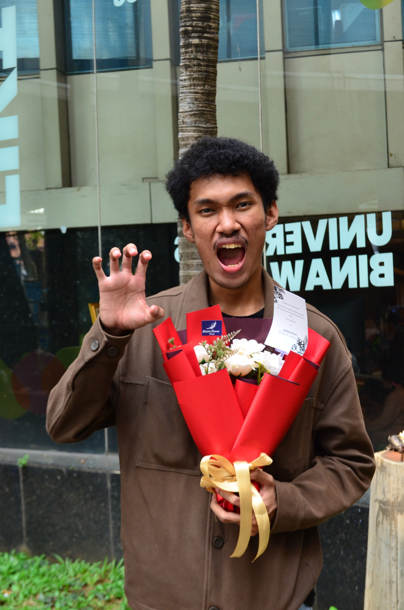

Informatics Engineering Student
I develop academic projects, information systems, and decision support systems using HTML, CSS, PHP, MySQL, and data-driven methods.

Informatics Engineering Student
I am an Informatics Engineering student with an interest in web development, software engineering, and data analysis. I have experience building web applications, including a laundry management system, blog website, feedback system, and an academic decision support system project.
Web-based application for managing laundry business operations.
PHPMySQLHTMLCSSFashion blog website with user authentication and content pages.
PHPMySQLHTMLCSSFeedback form website for collecting and storing user responses.
PHPMySQLHTMLCSSAcademic project using ROC and MOORA methods for drug management priority ranking.
ROCMOORAPHPMySQLLearning program participant in technology-related courses.
Learned about research facilities and national innovation processes.
Participated in community and technology development sessions.
Participated in community activities, including large-scale mentoring programs, social initiatives, and personal development programs organized by BAZNAS
Interested in working together or viewing my projects?